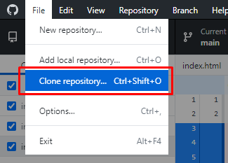

Sigam os seguintes passos
-
Acessem o site https://github.com/ e criem uma conta
-
Criem um novo Repositório
-
Insira o um nome, sugestão: ProjetoHTML
OBS: Deixem Público
-
Depois de criar o Repositório, Acessem o site https://desktop.github.com/ e façam o download do Gthub Desktop
-
Faça a instalação, depois de instalar vá em File>Clone Repository e na opção GitHub.com selecionar o
repositório criado

OBS: Em local path ultilize o local onde está instalado seu servidor apache C:\xampp\htdocs se
não tiver servidor apache instalado escolha o local que preferir
-
Procure o pasta ProjetoHTML(nome do repositório que você criou) e coloque dentro todo seu projeto html,
lembrando que o arquivo html deve ser index.html
-
Depois de copiar os arquivos volte no GitHub e faça um commit para que os arquivos sejam replicados
dentro do seu Repositório no GitHub
OBS: Seu primeiro commit do repositório, você precisará publicar Branch, será apenas uma unica
vez
-
Agora com os arquivos no seu GitHub, me enviar o seguinte link > https://{nickname}.github.io/{repositorio}/
Ex: https://felipelm3g.github.io/ProjetoHTML/